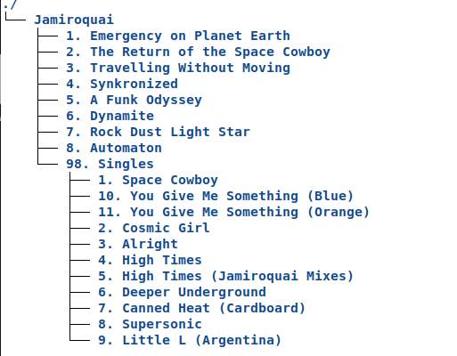
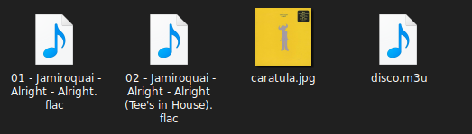
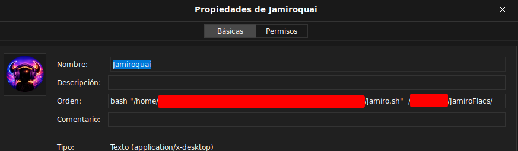
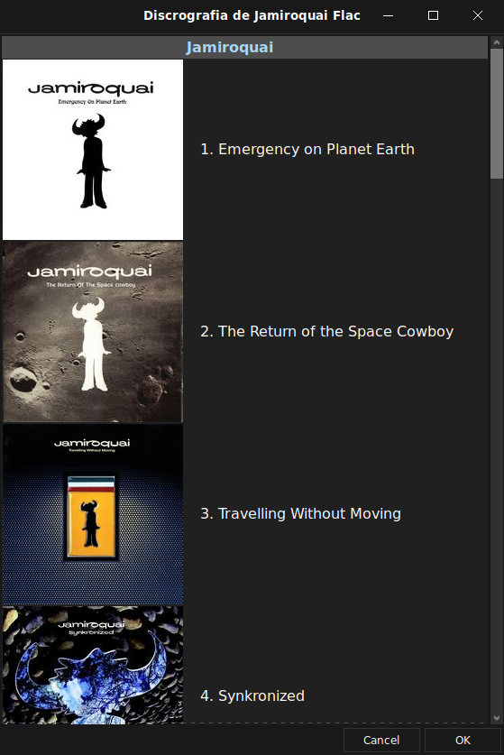
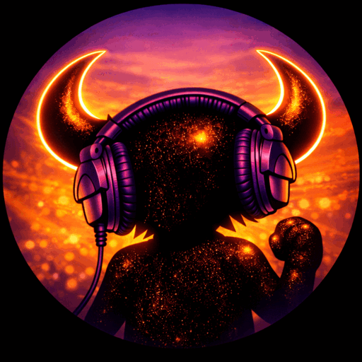

Les presento un script Bash para Linux, creado con ayuda de la IA, que facilita la organización y reproducción de tu colección de discos en formato FLAC.
El script recorre la estructura de tus directorios, detecta los álbumes y los muestra de forma ordenada. Al hacer clic en la portada de cada disco, se abre automáticamente en Audacious (clon de Winamp) o en VLC. Además, es fácilmente adaptable a otros reproductores.


Podés correrlo desde la terminal o crear un acceso directo. Aquí un ejemplo de cómo hacerlo al acceso directo:

Si los datos están cargados correctamente, se abrirá una ventana con todos los discos disponibles:

Al hacer clic en la portada de cada álbum, se abrirá Audacious para reproducirlo. Al cerrar Audacious, la ventana se recargará mostrando nuevamente todos los discos.
Para darle un toque divertido, también se abre una ventana con un GIF del Buffalo Man bailando:

Este proyecto no ofrece garantías. Podés modificarlo, usarlo como base para tu propio desarrollo, distribuirlo y disfrutarlo.
Aunque suelo escuchar música en plataformas de streaming, las versiones remasterizadas de los primeros álbumes de Jamiroquai no me convencen: pierden samples por derechos de autor y gran parte de su magia. Por eso ripié con Exact Audio Copy (EAC) toda la discografía y algunos maxis, y desarrollé este script para facilitar su reproducción y mantener la esencia original.